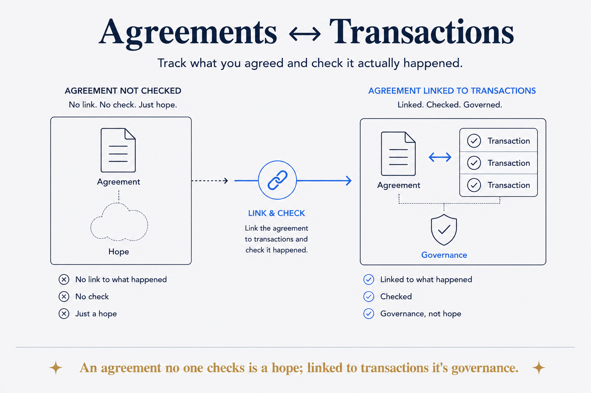

Almost everything in life is an agreement — with companies, within a family, with yourself. Model them and check them against evidence: an agreement no one checks is a hope.

Almost everything in life can be defined as an agreement — far more than we think. The obvious ones wear the word: contracts, subscriptions, insurance policies. But look again and they're everywhere: the warranty on the machine, the terms behind every login, the tariff with the utility, the quote a contractor gave, the arrangement within a family about a house, who handles what, what gets shared. And the least visible ones aren't with anyone else at all — the agreements you make with yourself: the health commitment, the spending rule, the promise about how you'll work. Each one is a statement of what should happen, and almost none of them are modeled anywhere. They live in PDFs, mailboxes and memories — or nowhere at all — which is why they drift.
An agreement on its own is intent with no feedback loop. The contract says a certain amount, on a certain date, for a certain thing — and then reality happens somewhere else entirely, in a bank statement nobody cross-references. You find out it drifted when it's expensive: the subscription that quietly doubled, the discount that expired, the premium that crept, the service you stopped using two years ago and never stopped paying for. Nothing failed loudly; the agreement and reality just stopped matching, and no one was checking.
Agreement-centered means making the agreement the organizing entity and everything else evidence against it. The evidence varies with the agreement; the check doesn't. Financial agreements get the strongest version — bank transactions are structured data already, so every payment links mechanically to the agreement that explains it, and "did what we agreed actually happen?" becomes a query that runs whether or not you remembered to worry. A payment with no agreement and an agreement with no payments are both flags worth raising. Non-financial agreements check against events instead: a health agreement with yourself links to gym visits and workouts; a family arrangement links to the calendar entries and notes that show it honored. Transactions for money, events for everything else — different evidence, same link, same question.
The pattern is the same machinery as everywhere else in this system — state the rule, check reality against it, flag the mismatch — pointed at the densest, least-modeled layer of ordinary life. And it scales without changing shape: the personal version governs promises to yourself; the household version, subscriptions and family arrangements; the business version is called contract management, SLA monitoring, data contracts. Same entity, same check. An unchecked agreement isn't governance at any scale. It's a hope with paperwork.
There's a data-model payoff hiding under the governance one: once the agreement exists as an entity, it becomes a hub. And it's a remarkably modelable entity — a start, an end, a status, the parties, the terms, often a cost, often a renewal or expiry date — the same handful of attributes whether it's an insurance policy, a gym commitment or a family arrangement. The renewal date alone earns the modeling: it's a built-in trigger, the difference between an expiry you act on and one that acts on you. Give it that shape and an astonishing amount of otherwise-loose data suddenly has something to relate back to: payments, events, correspondence, documents, renewal dates, the decisions that led to it. Data that was scattered noise becomes evidence about something. That's the quiet reason to model agreements even before the checking starts: they're one of the few entities almost everything else in a life can point at.
And the deepest check isn't operational at all. Once agreements and their evidence are linked, a different kind of judgement becomes possible: do I keep my agreements? Not as a feeling but as a pattern in the record — the commitments honored, the ones that quietly lapsed, the difference between the two. That's integrity, made visible. Companies get judged this way constantly (does the vendor deliver what the contract says?); the personal brain makes the same mirror available to you — which is exactly why agreements deserve first-class status in it.